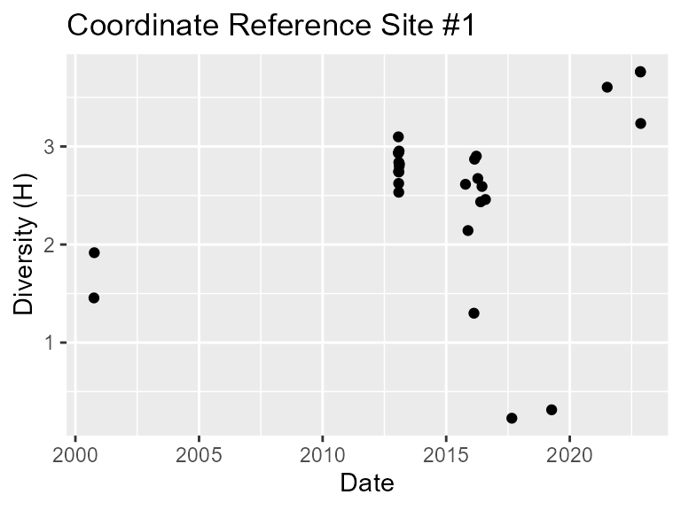
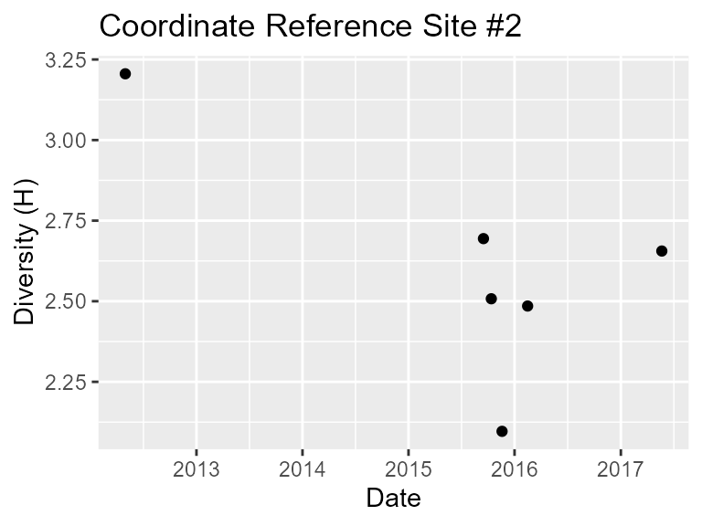

Clusterising sites using coordinates
Coordinate_References.RmdTo subset data for an exact location a pair of longitude/latitude
coordinates can be used with
subset_by_coordinate_ref().
The coordinate_reference argument will mark the centre
of the location and the distance_threshold will mark the
radius of the location in metres.
Below this function is used as an argument value in the
clusterise_sites() function to get clusterised data for two
locations in Colombia. The radius of each location is set to 50km.
# clusterise data for a specific location
Colombia_coordinate_ref_1 <- clusterise_sites(
dataframe =
subset_by_coordinate_ref(
dataframe = Colombia,
coordinate_reference = c(-73.325377, 3.956982),
distance_threshold = 50000
),
cluster_min_length = 30
)
# repeat the process with different coordinates
Colombia_coordinate_ref_2 <- clusterise_sites(
dataframe =
subset_by_coordinate_ref(
dataframe = Colombia,
coordinate_reference = c(-71.889919, 4.470524),
distance_threshold = 50000
),
cluster_min_length = 30
)The diversity over time for both sites can then be plotted.
# scatter plot for reference site 1
plot_sites_scatter_H(
clusterised_object = Colombia_coordinate_ref_1,
main = "Coordinate Reference Site #1"
)
#> Warning: Use of `stats_dataframe$date` is discouraged.
#> ℹ Use `date` instead.
#> Warning: Use of `stats_dataframe$H` is discouraged.
#> ℹ Use `H` instead.
# scatter plot for reference site 2
plot_sites_scatter_H(
clusterised_object = Colombia_coordinate_ref_2,
main = "Coordinate Reference Site #2"
)
#> Warning: Use of `stats_dataframe$date` is discouraged.
#> ℹ Use `date` instead.
#> Use of `stats_dataframe$H` is discouraged.
#> ℹ Use `H` instead.
The see where these patterns are happening a map can be created.
# create a new map using coordinates from first reference site
Colombia_coordinate_ref_map <-
map_start(
clusterised_object = Colombia_coordinate_ref_1,
site_name = "Ref#1",
colour = "purple"
)
# add to the existing map using information from the second reference site
Colombia_coordinate_ref_map <-
map_add(
existing_map = Colombia_coordinate_ref_map,
clusterised_object = Colombia_coordinate_ref_2,
site_name = "Ref#2",
colour = "darkred"
)The map is ready to be viewed.
# view the interactive map
Colombia_coordinate_ref_map